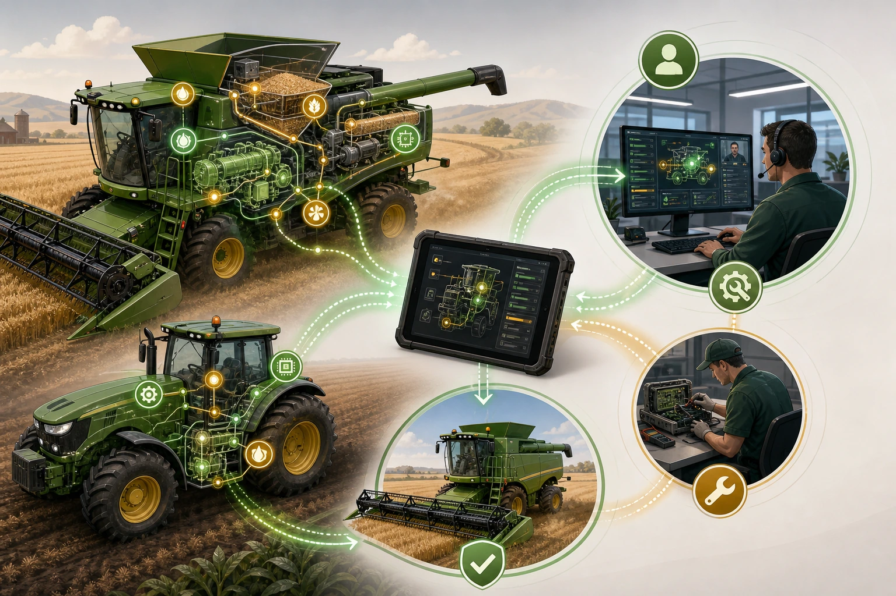

O suporte remoto chegou a um ponto em que já não pode ser tratado como acessório de cabine. John Deere, Case IH e New Holland publicam no Brasil ofertas que incluem leitura de falhas, acesso remoto ao monitor, diagnóstico a distância, atualização de software e serviço proativo. Esse é o fato documentado. Ele não prova que toda máquina conectada volta mais rápido ao trabalho, nem que toda concessionária entrega o mesmo nível de resposta. Prova algo mais simples: as próprias montadoras passaram a associar conectividade à disponibilidade da máquina. Quando uma promessa muda de lugar no discurso do fabricante, a régua de compra também precisa mudar.
Minha leitura é que a conexão só tem valor quando reduz incerteza antes de alguém pegar a estrada ou abrir a caixa de ferramentas. Uma frente parada não perde tempo apenas enquanto espera a peça. Perde tempo quando o operador descreve mal o alerta, quando o histórico está espalhado, quando o técnico sai sem saber qual módulo investigar e quando uma atualização poderia ter sido preparada antes do deslocamento. Em propriedades extensas, sobretudo onde a distância alonga cada atendimento, a informação errada custa horas. Às vezes custa a janela.
A John Deere oferece o exemplo numérico mais direto entre as fontes usadas neste texto. Na página brasileira do trator 8R 410, a empresa declara redução média de 20% no tempo de inatividade com o Connected Support e menciona diagnóstico remoto e reprogramação de software como meios de reduzir ou até eliminar certos deslocamentos. É um dado institucional. Não é uma média independente, não deve ser transferido para qualquer frota e não autoriza promessa de resultado. Ainda assim, a declaração mostra que o fabricante já mede o serviço conectado pela consequência operacional, não pelo número de telas disponíveis.
A Case IH descreve outro conjunto de capacidades. Nas páginas brasileiras do FieldOps e dos módulos de telemetria, a empresa informa coleta de dados a cada minuto, visualização remota do IntelliView 12, assistência remota, service tool remota, atualização de software e leitura de informações sobre a saúde da máquina e do motor. A New Holland, por sua vez, apresenta o FieldOps, o IntelliView 12 e o IntelliCentre como base para monitoramento em tempo real, acesso remoto à cabine, diagnóstico e atendimento proativo. Esses são fatos publicados pelas fabricantes. A inferência operacional vem depois: se o suporte enxerga a tela, recebe dados e consulta o estado da máquina, a triagem pode começar antes da chegada ao talhão.
Pode. Não significa que começará. Entre capacidade técnica e resposta útil existe uma cadeia de decisões humanas. O recurso precisa estar habilitado. A máquina precisa transmitir. O operador precisa saber quando autorizar o acesso. O concessionário precisa ter equipe disponível e um procedimento para priorizar a ocorrência. A fazenda precisa registrar o que aconteceu, o que foi tentado e o que resolveu. Se um desses elos falha, a conectividade continua presente no folder, mas desaparece justamente quando a safra aperta.
A literatura técnica preservada no pacote ajuda a explicar por que essa cadeia ganhou peso. Uma revisão sobre sensores em colhedoras, publicada em junho de 2026, descreve essas máquinas como plataformas distribuídas de supervisão, diagnóstico e controle adaptativo. Outra revisão, dedicada ao uso de inteligência artificial em colhedoras, trata o monitoramento remoto por CAN bus e conectividade celular como configuração comercial madura em máquinas médias e grandes. O fato técnico é esse. Minha interpretação é que a manutenção deixou de começar apenas quando alguém encontra uma quebra visível. Ela pode começar quando um sensor degrada, um parâmetro sai da faixa ou uma sequência de alertas aponta o caminho da falha.
Isso altera o trabalho de quem compra, opera e mantém a frota. Eu não trataria acesso remoto como bônus de pacote. Trataria como uma obrigação operacional que precisa ter dono, prazo, permissão e registro. Quem recebe o primeiro alerta? Quem decide se o operador pode continuar? Quem autoriza o concessionário a enxergar o monitor? Quanto tempo a equipe remota tem para responder em uma pane que derruba a frente? Qual informação deve chegar ao técnico antes de ele sair? Sem respostas acordadas, o recurso digital não organiza a emergência. Apenas cria mais uma tela dentro dela.
Eu começaria a negociação pelo histórico das paradas mais caras, não pelo catálogo. A pergunta útil não é apenas se a máquina tem telemetria. É quantas horas foram perdidas por falta de peça, quantas por diagnóstico incorreto, quantas por espera de autorização, quantas porque o suporte não via a tela e quantas porque ninguém guardou o histórico da falha anterior. Essa separação é uma recomendação editorial, não um resultado publicado pelas fontes. Ela serve para revelar onde o tempo está escapando. Se a maior perda ocorre antes do reparo físico, o serviço conectado merece peso maior na decisão. Se a perda está concentrada em estoque de peças, logística ou oficina, a solução será outra.

O contrato precisa refletir essa diferença. Um tempo genérico de atendimento diz pouco quando uma colhedora para em janela crítica. A fazenda precisa saber quais ocorrências recebem prioridade, quais canais funcionam fora do horário comum, quais linhas aceitam leitura ou atualização remota e quando o deslocamento presencial é aberto. Também precisa conhecer as dependências. Há função incluída no equipamento? Existe assinatura? O acesso exige consentimento a cada sessão? O histórico pode ser exportado? A resposta a essas perguntas não garante uptime. Ela transforma uma promessa ampla em condição verificável.
Na minha opinião, suporte remoto sem regra de acesso é uma fragilidade de gestão. Permitir que terceiros vejam a tela, consultem dados ou atualizem software pode ser necessário para resolver a ocorrência, mas a autorização precisa ter escopo e deixar registro. Bloquear tudo por medo também não resolve. O equilíbrio está em saber quem acessa, com qual finalidade, por quanto tempo e quem confere o resultado. Essa leitura não aparece como conclusão literal de uma única fonte. É uma inferência de governança apoiada nas capacidades que as próprias plataformas anunciam.
Há ainda o problema da frota real. Poucas fazendas trabalham apenas com máquinas novas, da mesma marca, com a mesma geração de monitor e operadores igualmente treinados. A convivência entre modelos, idades, prestadores e implementos cria zonas sem visibilidade. Um sistema excelente em ambiente homogêneo pode entregar pouco quando a operação depende de reconciliação manual, sinal irregular ou cadastro incompleto. Por isso, eu perguntaria como a plataforma lida com histórico, exportação, permissões e equipamentos que ficam fora do ecossistema principal. Não para exigir integração perfeita, mas para conhecer a fronteira do que será gerido de forma automática e do que continuará dependendo de disciplina humana.
Treinamento também entra na conta. Acesso remoto ao monitor perde utilidade quando o operador não reconhece o momento de pedir ajuda ou teme interromper a operação para relatar um alerta. O técnico remoto, por outro lado, precisa comunicar o que está fazendo e confirmar o que mudou. A gestão precisa fechar o ciclo depois da ocorrência. Qual foi a causa? Qual tempo foi consumido em diagnóstico, espera, deslocamento e reparo? A falha voltou? A resposta alimentou a rotina de prevenção? Sem esse registro, a fazenda acumula chamados, mas não constrói conhecimento sobre a própria frota.
Também é preciso preservar limites claros. Reparo remoto não corrige chicote rompido, desgaste físico, falha hidráulica, combustível contaminado ou peça ausente. Diagnóstico a distância não garante que o componente chegará a tempo. Atualização de software não substitui inspeção, manutenção planejada ou estoque bem dimensionado. Conectividade ruim pode interromper o processo. Uma equipe despreparada pode interpretar mal uma orientação correta. O serviço conectado melhora a qualidade e a velocidade de parte da resposta. Ele não elimina a oficina, o campo nem a responsabilidade de quem opera.
O acordo anunciado pela Federal Trade Commission com a Deere, em 8 de julho de 2026, acrescenta tensão ao debate. A autoridade americana colocou leitura de códigos, reprogramação, pareamento de peças e retomada da máquina após determinados bloqueios entre os pontos ligados ao direito de reparo. Isso é um fato regulatório dos Estados Unidos. Não cria obrigação automática no Brasil. A inferência pertinente para nossa realidade é mais contida: acesso ao diagnóstico e capacidade de devolver a máquina ao trabalho estão influenciando a disputa sobre quem controla o reparo. Comprar tecnologia conectada sem entender esse controle pode ampliar dependência em vez de reduzi-la.
Essa tensão não deve ser resolvida com uma oposição simplista entre fazenda e concessionário. O atendimento presencial continuará necessário, e uma rede preparada pode usar dados remotos para chegar melhor ao campo. O problema surge quando a propriedade compra a promessa de disponibilidade sem conhecer os limites de acesso, as condições do serviço e as responsabilidades de cada parte. Parceria técnica exige transparência. Se o concessionário oferece diagnóstico remoto, deve explicar alcance, prazo e dependências. Se a fazenda quer resposta rápida, precisa manter conectividade, cadastro, autorização e equipe em condição de uso.
Para os profissionais da área, a consequência prática é uma mudança no modo de medir o pós-venda. Não basta contar chamados fechados. É preciso observar tempo até a primeira leitura útil, qualidade do diagnóstico inicial, necessidade de novo deslocamento, reincidência da falha e tempo total até o retorno seguro ao trabalho. Esses indicadores não foram apresentados pelas fabricantes como um padrão comum. São uma proposta editorial para transformar o discurso de uptime em acompanhamento operacional. Se a equipe não mede o caminho da parada, dificilmente saberá se o suporte conectado reduziu tempo ou apenas mudou onde a espera acontece.
Eu também evitaria decidir com base em uma demonstração isolada. Uma tela funcionando no showroom comprova que a função existe. Não comprova que o fluxo inteiro resiste a sinal fraco, mudança de turno, operador novo, fila de atendimento e pressão de safra. Antes de renovar contrato ou atribuir valor adicional ao pacote, eu pediria um teste do caminho completo. O alerta nasce na máquina, chega a quem precisa, gera autorização, permite leitura, orienta uma ação e deixa registro. Quando esse ciclo termina, há evidência para discutir serviço. Antes disso, há apenas possibilidade técnica.
O ponto que considero mais importante é o limite entre autonomia e dependência. A conectividade pode dar à fazenda mais visibilidade, histórico e velocidade. Também pode concentrar decisões em sistemas que a equipe não domina. A diferença está no desenho do processo. Se os dados permanecem acessíveis, as permissões são claras, o suporte tem prazo e a equipe aprende com cada ocorrência, a tecnologia amplia capacidade de gestão. Se tudo depende de um canal opaco e de uma autorização improvisada, a mesma tecnologia pode tornar a operação mais vulnerável.
Por isso, minha recomendação final é começar pela parada, não pela plataforma. Revisar as ocorrências que mais consumiram horas, separar causas mecânicas e eletrônicas, identificar onde faltou informação e testar o caminho de suporte com a frota que realmente estará no campo. Depois, comparar o que John Deere, Case IH e New Holland publicam com o que está habilitado no contrato e com o que a equipe sabe usar. O ganho mais imediato não está em prometer autonomia total. Está em encurtar, com responsabilidade, o ciclo entre falha, leitura correta, suporte autorizado, reparo e retorno ao trabalho.
Quando a próxima máquina parar, o diagnóstico não deveria começar com um telefonema sem contexto. Deveria começar com dados legíveis, papéis definidos e uma decisão rápida sobre o que pode ser resolvido a distância e o que exige presença no talhão. Essa é a oportunidade. O limite é igualmente claro: nenhuma conexão substitui processo, competência e confiança entre as partes. Uptime conectado não é um atalho. É um compromisso que precisa ser desenhado antes da pane.